Von Flensburg nach Kopenhagen
Wir haben 5 Tage Zeit und dafür bietet sich ein Besuch der dänischen
Hauptstadt mit dem Rad von Flensburg aus geradezu an. Die circa 340km sollten
zu schaffen sein. Die Wetteraussichten sind in Ordnung, allerdings ist mit
Wind aus Nordost Gegenwind angesagt.
16.09.2008:
Flensburg - Åstrup (82km)
Wir parken unser Auto in einem Wohngebiet in Flensburg, bauen dort die
Räder zusammen und laden das Gepäck auf. Mit Zelt, Kocher,
Lebensmitteln und Campingausrüstung sind die Radtaschen prall
gefüllt. Erst einmal fahren wir in die Innenstadt und gehen bei einem
Bäcker frühstücken, ehe wir nah der Ostsee über die
Grenze fahren. Bald kommt auch schon das Highlight der Region:
Annies Kiosk gegenüber der Ochseninseln. Angeblich gibt es dort die
besten Hotdogs Dänemarks. Es ist mit 11 Uhr zwar noch ein wenig früh,
aber einen Hotdog genehmigen wir uns dann doch.
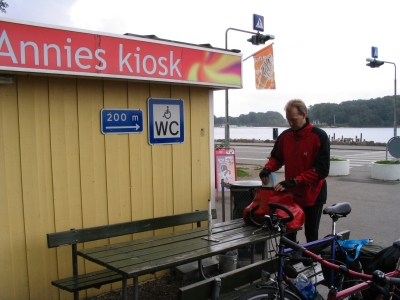
Besuch bei Annies Kiosk
Er ist auch wirklich gut. Gestärkt geht es weiter Richtung
Sønderborg. Wir nutzen teilweise den hervorragend ausgeschilderten
Ostseeküstenradweg oder die Hauptstraße 8, wenn uns der Radweg
zu große Umwege macht.
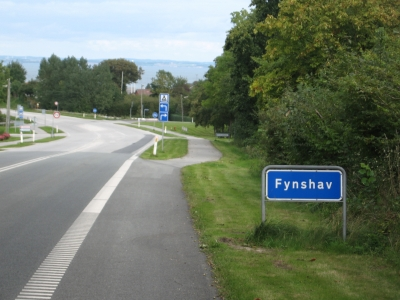
Hervorragende Radwege selbst an Hauptstraßen
Auch an Hauptstraßen lässt sich gut Rad fahren, denn die Radwege
sind breit, die Beschilderung gut und der Autoverkehr ist nicht so rege.
Außerdem nimmt der dänische Autofahrer im Allgemeinen
Rücksicht auf Radfahrer.
Kurz vor Sønderborg erreichen wir nach einer lang gezogenen Steigung
Dubbøl bzw. die Düppelner Schanzen, wo wir eine kurze
Verschnaufpause einlegen und uns über den Deutsch-Dänischen Krieg
informieren. Danach lassen wir die Räder einfach rollen und erreichen nur
wenige Minuten später das malerische Sønderborg das wir zu
Fuß erkunden, ehe wir weiterfahren. Wir sind uns einig:
Sønderborg ist auch einen zweiten Besuch wert.
Bei Fynshav müssen wir mit der Fähre nach Bøjden
übersetzen. Leider fährt die Fähre nur alle 2 Stunden, und da
wir dort gegen 14:15 ankommen, sehen wir die 14 Uhr Fähre nur noch von
hinten. Also haben wir bis 16 Uhr Zwangspause. Diese nutzen wir im
Aufenthaltsraum der Fährgesellschaft und füttern den Eisautomaten
mit dänischen Kronen.
Die Überfahrt dauert 45 Minuten, und wir entscheiden, da es noch zu
früh ist, nicht direkt den Campingplatz in Bøjden zu nutzen. Ein
Fehler, wie wir später feststellen. Den Campingplatz in Faaborg gibt es
nicht mehr (alte Karte), aber wenige Kilometer weiter gibt es bei Åstrup
noch einen Platz. Wir kommen dort um 18:20 Uhr an und stellen erstaunt fest,
dass es den Platz zwar gibt, aber er seit dem 31ten August Saisonende hat. Mist!
In der Nähe gibt es ein komfortables Hotel, aber das ist ausgebucht. Der
Hotelier besorgt uns allerdings einen Platz auf einem nahe gelegenen
Naturcampingplatz. Bei diesen Plätzen handelt es sich von Privatpersonen
zur Verfügung gestellte Wiesen mit Toilette, Wasserhahn und Feuerstelle.
Unser Platz liegt traumhaft direkt an der Ostsee und ist mit 40 dänischen
Kronen für zwei Leute konkurrenzlos günstig. Wir bleiben dort auch
die einzigen Gäste.
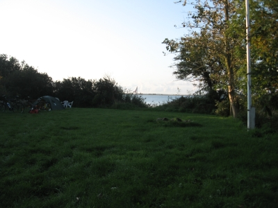
Unser exklusiver Übernachtungsplatz
Für die Übersicht aller Naturcampingplätze gibt es ein in vielen
Touristeninformationen erhältliches Buch. Wer überwiegend oder
ausschließlich derartige Plätze nutzen möchte, sollte sich
das Buch besorgen, da die Plätze vor Ort nicht ausgeschildert sind und die
Betreiber nicht unbedingt in der Nähe wohnen.
17.09.2008:
Åstrup - Maribo(95km)
Wir wachen auf, bevor die ersten Sonnenstrahlen unseren Platz erreichen, und
sitzen daher auch früh auf dem Rad. Wir folgen dem Ostseeküstenradweg
bis nach Svendborg. Ein sehr nettes Wegstück entlang der dänischen
Südsee. Vor Rantzausminde sehen wir sogar die Jacht des dänischen
Kronprinzen flankiert von zwei Militärschiffen. Im sehenswerten Svendborg
erlauben wir uns einen Kaffee und einen vorgezogenen Mittagssnack, ehe wir an
Tåsinge vorbei und über die Brücke vorbei an Rudkøbing
fahren.
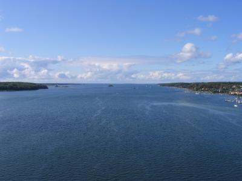
Dänische Südsee
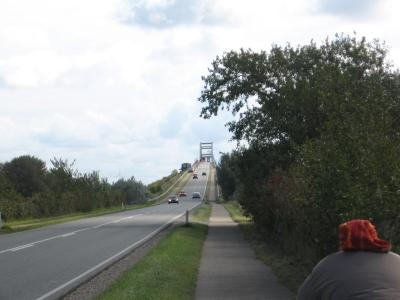
Die Brücke vor Rudkøbing
Wir überqueren auf dem kürzesten Weg Langeland bis nach Spodsberg.
Dort müssen wir Langelandsbælt nach Tårs überqueren. Bei
dieser Fähre haben wir Glück, denn wir erreichen sie kurz vor der
Abfahrt. Es gelingt uns noch, schnell die Tickets zu kaufen, und hinter uns
schließt sich das Tor.
Auf Lolland angekommen, entscheiden wir uns, noch bis nach Maribo zu fahren, wo
es einen Campingplatz gibt. Wir fahren an der Landstraße entlang, und die
Strecke zieht sich. Wir kommen dann aber doch irgendwann in Maribo an, und
diesmal geht mit dem Campingplatz alles glatt. Die Duschen sind auch in Ordnung
und nun auch dringend nötig.
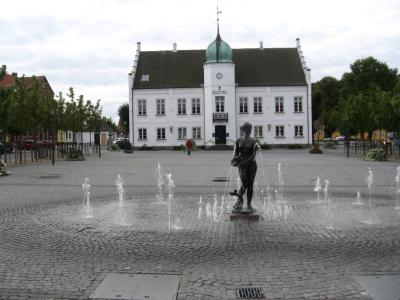
Das Zentrum von Maribo
18.09.2008:
Maribo - Fakse Ladeplats (80 km)
Wir starten früh am Morgen in Maribo, und nach einem Besuch beim
Bäcker erreichen wir Sakskøbing. Dort kaufen wir am
Straßenrand an einer der vielen Vertrauenskassen ein paar Äpfel.
Die schmecken lecker und helfen uns bis nach Guldborg, wo wir an einer
Engstelle die Ostsee per Brücke überqueren.
Wir sind nun auf Falster. Ein Schild, auf dem erstmalig die Entfernung nach
Kopenhagen angegeben ist, motiviert uns ungemein. Nur noch 111 Kilometer.
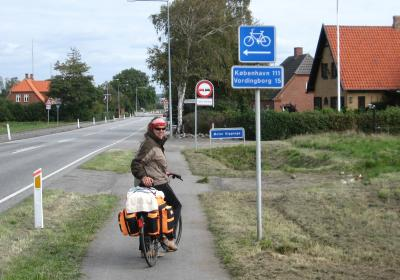
Motivationshilfe am Wegesrand
Der Gegenwind nervt aber trotzdem. So langsam glaube ich, dass wir doch von
Kopenhagen nach Flensburg hätten fahren sollen. Mit Rückenwind
fährt es sich doch angenehmer.
Vor Vordingborg erwartet uns nun noch eine abenteuerliche Brücke. Der
Beton und der Stahl sehen wenig Vertrauen erweckend aus.
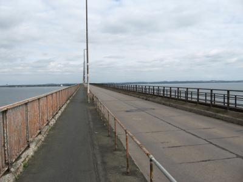
Sieht wenig Vertrauen erweckend aus
Sie hält aber, und wir erreichen Vordingborg. Wir sind nun auf Seeland. Von
dort ist unser nächstes Ziel Praesto. Unser Weg verläuft nahe der E47.
Zu dem Gegenwind kommt nun auch noch eine unerwartete Steigung. In Praesto sind
wir schon ziemlich fertig, aber wir entschließen uns wegen der
frühen Tageszeit dazu, noch bis nach Fakse Ladeplats zu radeln. Das
Wetter verschlechtert sich. Es wird kälter, aber es bleibt trocken.
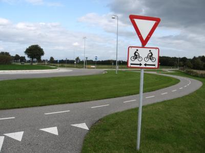
Vorbildliche Radwegeplanung
Wir sind die einzigen Gäste auf dem Campingplatz und haben eine riesige
Wiese und die beheizte Küche für uns. Leider hab ich mich im
Supermarkt im Bierregal vergriffen und mich vom Etikett leiten lassen, ohne
auf den Alkoholgehalt zu achten. Beim Abendessen merken wir dann, dass es ein
1,7% Bier mit dem Geschmack von Malzbier ist. Bäh!
19.09.2008:
Fakse Ladeplats - Kopenhagen (73 km)
Auf ruhigen Nebenstraßen fahren wir genau nach Norden auf unser Ziel
Kopenhagen zu. Bei Vallø fahren wir am schönen Schloss vorbei,
und es geht auf Alleen nach Køge. Wir können bereits über die
vor uns liegende weit gezogene Bucht auf die ersten Ausläufer von
Kopenhagen sehen, und sogar die Brücke von Malmö ist zu erkennen.
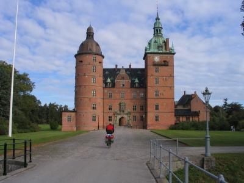
Schloss Vallø
Ab Køge fahren wir dicht am Meer - allerdings ohne Sichtkontakt dahin -
durch Solrød Strand, Karlsunde Strand, Mosede Strand, Greve Strand und
Hundige Strand bis ins Zentrum von Kopenhagen. Die letzten Kilometer sind
wieder unendlich lang, und spätestens die Fahrt durch die Vororte
Kopenhagens an den viel befahrenen Hauptstraßen entlang zerrt an unseren
Nerven, denn die vergangenen Tage waren wir von dänischer Idylle und
Ruhe umgeben.
Nachdem wir ein Zimmer für die Nacht gefunden haben, machen wir eine
kleine Stadtrundfahrt per Rad. Und bei der kleinen Meerjungfrau sehen wir
auch wieder die königliche Yacht. Abends gönnen wir uns ein
schönes Abendessen in einem netten Restaurant, das uns mit
Hauptstadtpreisen fast die gesamte Reisekasse plündert.
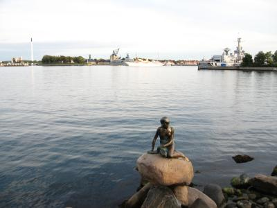
Die kleine Meerjungfrau
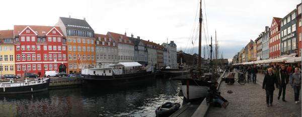
Der Nyhavn
20.09.2008:
Kopenhagen - Flensburg
Bäh. Es regnet Bindfäden. Es ist kein Wetter, um noch länger in
Kopenhagen zu verweilen, also checken wir aus und rollen zum Bahnhof.
Der Fahrkartenkauf verläuft sehr einfach: eine Nummer gezogen, an den
Schalter gegangen, wo die Nummer aufgerufen ist, und eine nette dänische
Bahnbedienstete berät uns auf Deutsch. Wir buchen zwei Plätze
für uns und die Fahrräder bis nach Padborg. Da das kurze Stück
über die Grenze nach Deutschland die Rückreise erheblich verteuert
hätte, wollen wir von Padborg nach Flensburg wieder auf die Fahrräder
umsteigen.
Die dänische Reichsbahn ist sehr komfortabel, und unsere
Fahrräder sind im selben Abteil untergebracht wie wir. Leider ist das
Highlight auf der Rückfahrt - die Fahrt über die Store Belt
Brücke - getrübt, da hier die Bahnstrecke fast ausschließlich
unterirdisch verläuft.
Von Padborg aus suchen wir den Weg zurück
nach Flensburg, der gut ausgeschildert ist, und stellen bereits auf den ersten
deutschen Radwegemetern fest, dass Dänemark wohl doch den besseren
Asphalt verwendet. Unser Auto steht noch immer da, wo wir es abgestellt haben,
und nach dem Verladen all unserer Sachen geht es auf den Heimweg. Ein
gelungener Kurzurlaub geht zu Ende.
Links:
Visit Denmark
Hier gibt es das Verzeichnis der Lagerplätze
Visit Kopenhagen
Schloss Vallø
Annies Kiosk in Sønderhav
Impressum
|